CASE 02 / MAZOO
从传统文化
到年轻品牌
From Cultural Heritage to a Youth Brand
MAZOO 海缘妈祖品牌 IP 0→1
以文化研究定义品牌，让 IP 成为连接产品、内容与渠道的共同语言，走进年轻人的日常生活。
01 / BACKGROUND
如何让传统妈祖文化
进入年轻人的日常生活？
妈祖文化具有鲜明的传统属性，但与年轻人的日常表达存在距离。项目以日常情境作为连接点，让文化从“被认识”走向“被使用、被分享”。
从传统符号出发
保留冠冕、服饰与核心色彩，让年轻化表达仍有清晰的文化来源。
让角色进入日常
从工作、休闲、出行与观影等情境切入，让 IP 与年轻用户建立关系。
从角色走向品牌
让统一的视觉与内容语言延伸到文创、社媒与线下场景。
- 文化研究
- 品牌定位
- IP形象
- 内容
- 产品
- 传播
- 用户反馈
02 / POSITIONING
传统文化 × 现代审美
将妈祖文化中的核心符号，以更年轻、更日常的视觉语言重新表达，建立一个既有文化来源、也能进入当代生活的品牌形象。
亲和
通过圆润角色、柔和表情和简化造型，让妈祖形象更易被年轻用户接受。
年轻
以明快配色、生活化主题和轻松表达，让传统文化进入年轻人的内容语境。
陪伴
让角色不仅被观看，也出现在工作、休闲、出行和文创产品中。
品牌定义角色，内容建立关系，产品让文化进入日常。
03 / IP DESIGN
保留文化辨识度，
简化视觉表达。
把传统元素转化为能在插画、产品与社交内容中持续延展的品牌资产。
人物五官
以圆润轮廓与温和眉眼，建立亲和、可接近的角色性格。
冠冕
保留标志性的冠冕轮廓，将繁复装饰归纳为清晰的形状与色块。
服饰
延续红衣等传统视觉线索，简化衣纹细节，适应不同场景与载体。
色彩
以红、黄、蓝等鲜明色彩组合，建立统一而有活力的品牌识别。
从主形象到延展符号
让品牌拥有一套可组合的视觉语言
04 / CONTENT SYSTEM
随行妈祖，
陪伴每一种日常。
通过日常情境建立 IP 与年轻用户之间的关系，让角色拥有持续更新的内容主题。
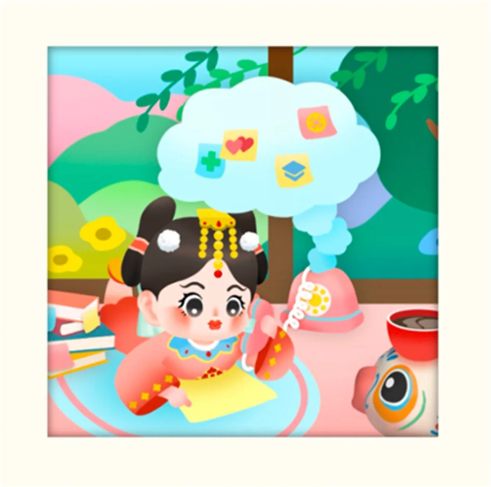
摸鱼妈祖
在忙碌间隙，留一点自己的时间。
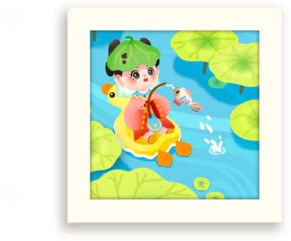
工作妈祖
把陪伴感放进每一个工作日。
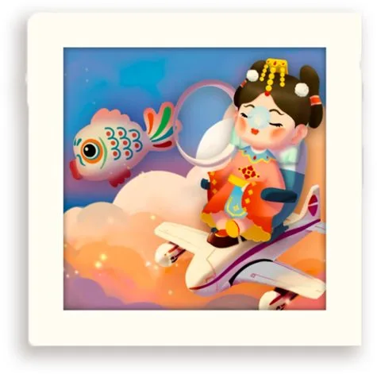
飞行妈祖
带着熟悉的文化符号出发。
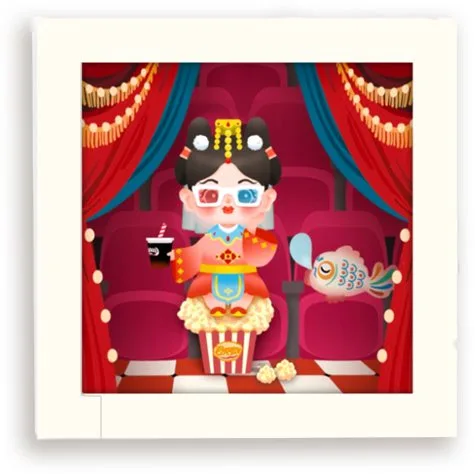
观影妈祖
一起进入故事，也一起享受休闲。
05 / PRODUCT
从品牌形象，
到可以带走的日常。
将 IP 转化为明信片、贴纸、装饰品、钥匙扣、文具与其他文创，让品牌进入携带、使用和赠送的场景。
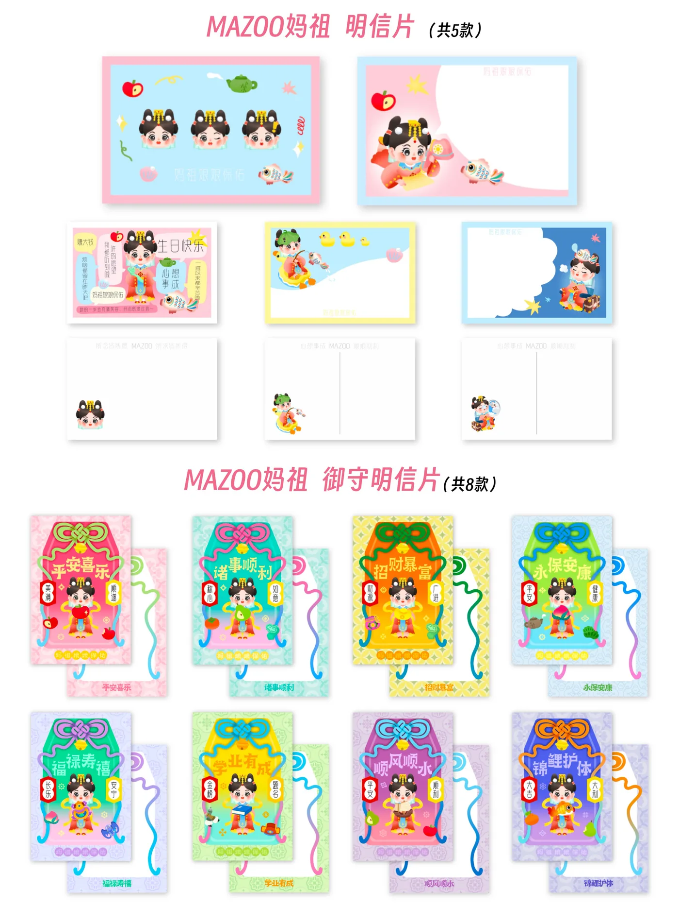
明信片
以纸品承载角色与祝福，连接记录和赠送。
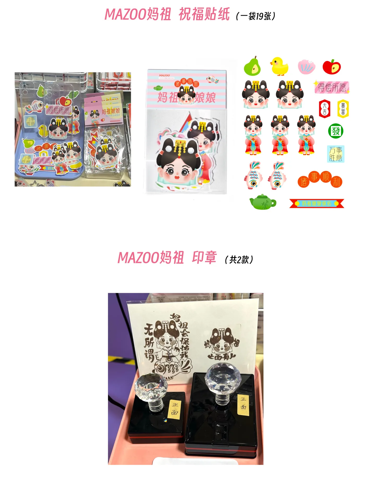
贴纸与文具
让视觉符号融入手帐、装饰与日常表达。
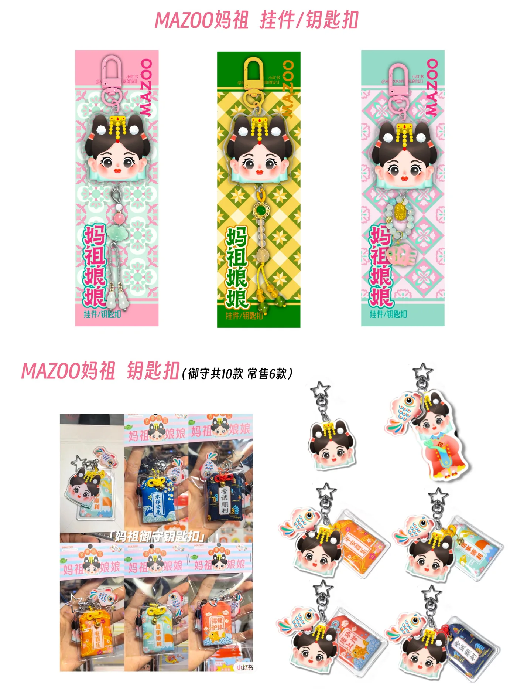
钥匙扣与挂件
将角色变成随身携带的品牌触点。
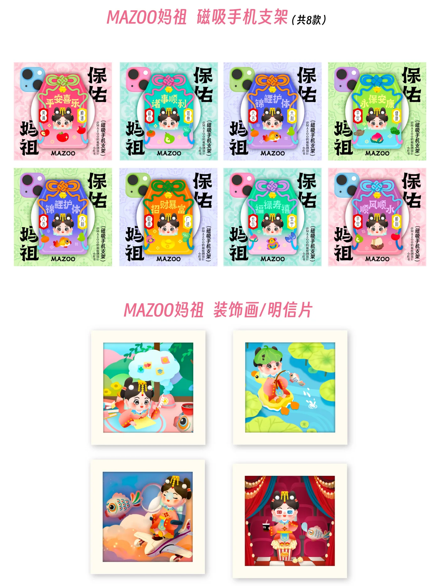
装饰品与其他文创
延伸至手机支架等物件，连接功能与审美。
06 / PITCH DECK
让品牌方案，
成为清晰的路演表达。
围绕竞赛路演，将文化理念、市场分析与用户洞察组织为演示内容，以统一的品牌视觉与开场动画呈现 MAZOO 的项目思路。
从开场，建立品牌印象。
以品牌角色、色彩与延展符号构成开场动画，将路演带入 MAZOO 的视觉语境，再展开文化、产品与市场的叙事。
项目概述与文化理念
封面、目录与项目概述，建立路演的叙事框架。
文化背景与市场分析
从文化背景、市场问题与产品优势，说明项目的切入点。
用户洞察与竞争分析
围绕用户画像、消费偏好与品牌对比，呈现定位依据。
08 / OFFLINE
从信息流，
走进真实的相遇。
通过文创市集与展览，让观众现场看到产品、接触品牌，也让线上内容拥有真实的线下场景。
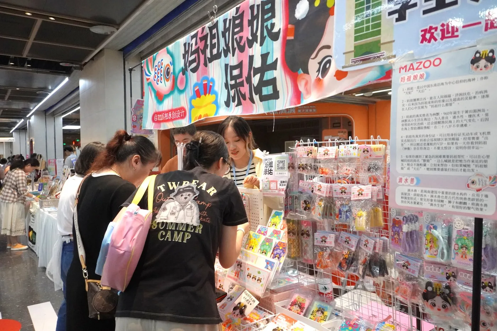
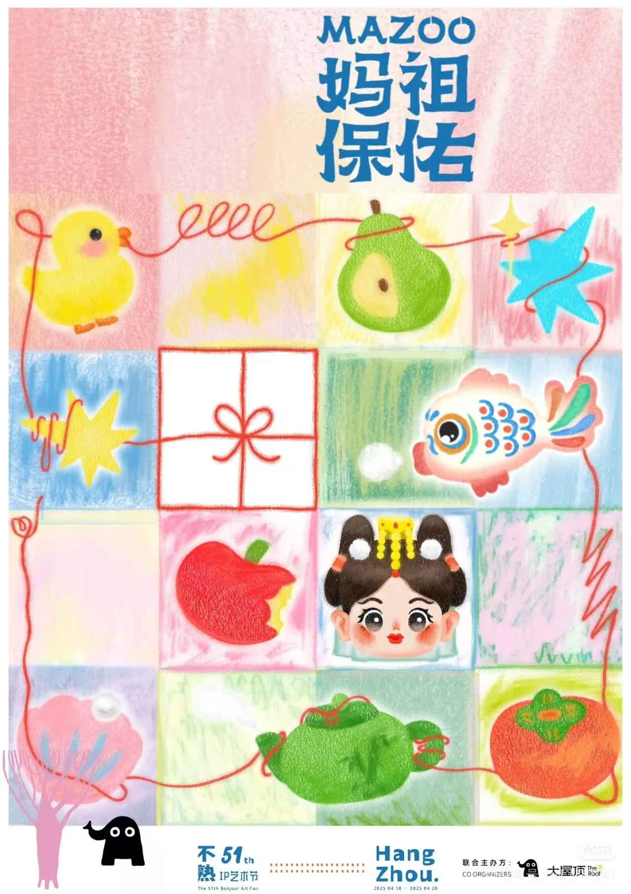
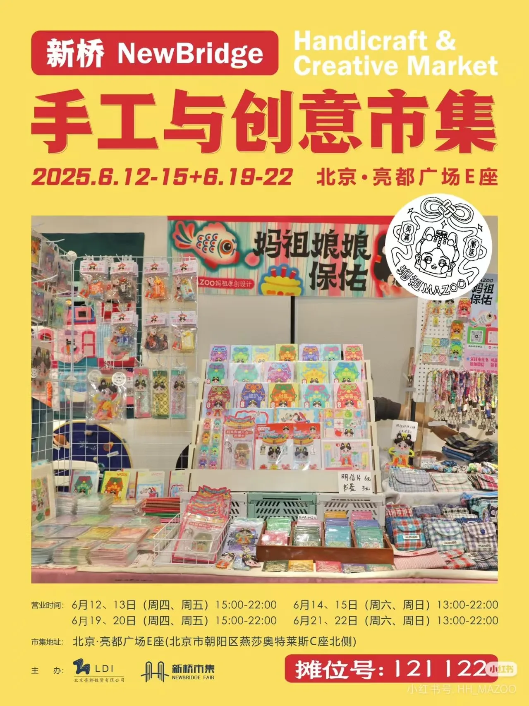
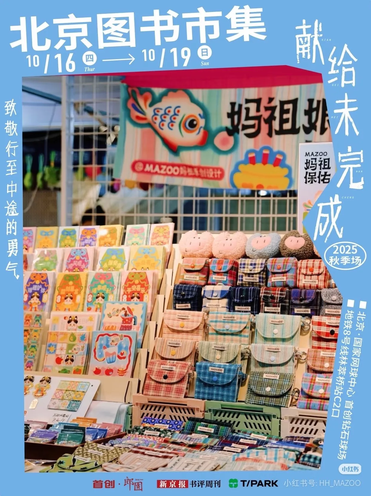
内容带来认识，产品创造接触，线下交流让品牌与用户的关系更具体。
09 / RESULT
从文化 IP，
到完整的品牌实践。
以内容积累、渠道反馈与项目荣誉，呈现从品牌构建到传播落地的结果。
原创内容
粉丝
单篇最高点赞
全国大学生电子商务创新创意创业挑战赛
省级一等奖BRAND → PRODUCT → CONTENT → CHANNEL
让传统文化，
成为年轻人愿意亲近的品牌。
文化研究与受众洞察定义品牌，IP 设计形成识别，文创产品连接日常，主题内容与线上线下渠道共同建立品牌关系，数据反馈为后续迭代提供依据。